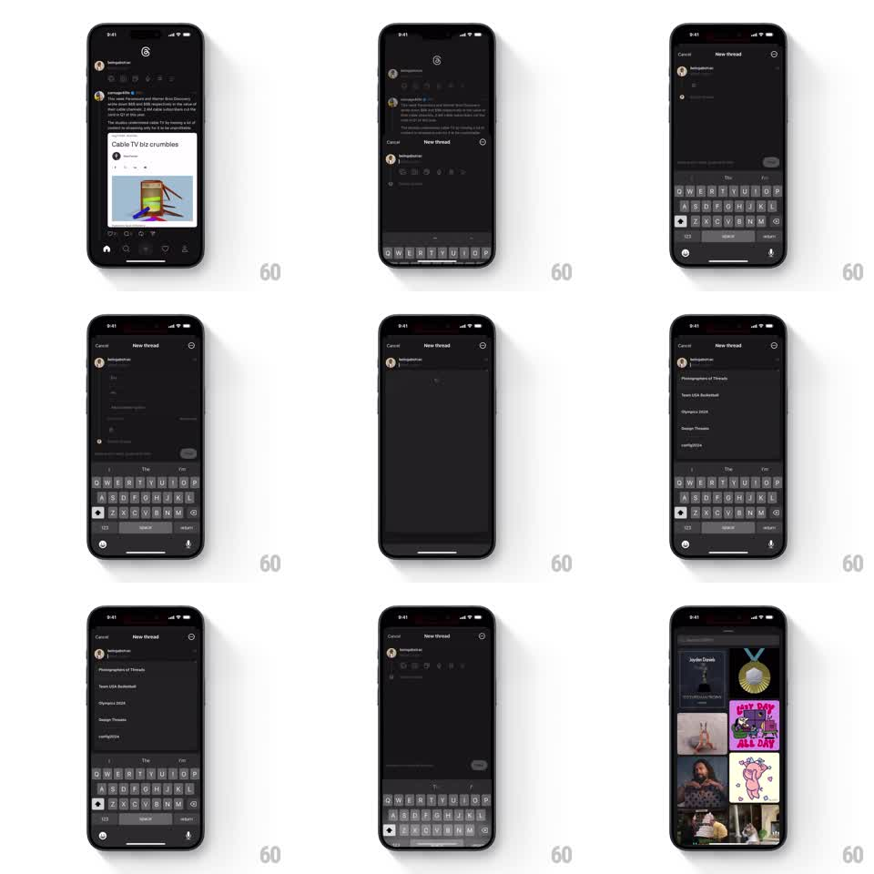

Media
Frame-by-frame

Rebuild this interaction 1:1: Threads' new-thread composer - a bottom sheet and keyboard that rise in perfect tandem, with inline poll and tag rows that expand inside the sheet without breaking its layout rhythm.

Rebuild this interaction 1:1: Threads' new-thread composer - a bottom sheet and keyboard that rise in perfect tandem, with inline poll and tag rows that expand inside the sheet without breaking its layout rhythm. ## Integration Integration: stack-agnostic spec - springs given as stiffness/damping, timed motions as duration + curve; map every value to your framework and animation library of choice. ## Scene The feed dims; a dark composer sheet rises from the bottom in lockstep with the keyboard: avatar + "What's new?" placeholder, an attach toolbar row, and Cancel/Post header controls. Tapping the poll icon inserts an inline poll block (question field + option rows) inside the composer; tags expand similarly. ## Motion spec Pattern: sheet-keyboard tandem rise with inline expansion. - Sheet and keyboard animate as one unit: identical spring (stiffness ~340, damping ~32) with zero offset - the sheet's bottom edge rides the keyboard's top edge. - The header (Cancel, "New thread", Post) fades in 60ms after the rise starts; the text field autofocuses as travel completes. - Tapping poll: the poll block expands inline (height 0 to auto, 250ms, ease-out), pushing the toolbar down; option rows stagger in (50ms apart). - Tapping tag/topic: a tag row slides open the same way, below the text field. - Removing poll/tag: the block collapses (200ms, ease-in) and the toolbar springs back up. - Drag the sheet down or tap Cancel: sheet and keyboard fall together, reversing the entrance spring. ## Calibration - Sheet and keyboard never separate - if the keyboard lags, drive the sheet from the keyboard frame change, not its own timer. - Inline expansions move content, never jump it: neighbors slide, nothing snaps. ## Reduced motion Sheet fades in above a static keyboard region; expansions appear without slide. ## Don't miss - The Post button activates (dim to full white) only once text exists - the state flip is instant, no fade. - The toolbar icons stay pinned above the keyboard through every expansion.